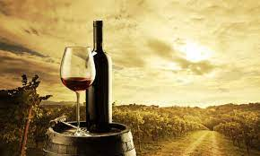

7 motive pentru care vinul e considerat sanatos
(daca nu bei mai mult de un pahar pe zi)

N-am de gand sa contrazic faptul ca alcoolul dauneaza grav sanatatii. De altfel, nici un fel de exces nu ne face bine. Insa se pare ca un pahar de vin pe zi chiar ne poate aduce beneficii. Da, am zis doar un pahar… Stiu ca la o petrecere nu ne oprim doar la unul singur, insa nici nu avem parte de asa ceva in fiecare seara, deci sa nu ne facem griji. Sa ne concentram pe acest pahar pe care il bem seara, dupa o zi plina. Sunt studii care arata ca e chiar un obicei sanatos. Dar, repet, daca e consumat in cantitati moderate.
1.Estompeaza ridurile
Contine resveratrol, acest ingredient magic pe care il gasim deseori si in cosmeticele cu actiune antirid. Deci putem spune ca un pahar cu vin chiar ajuta si la frumusete!
2.Imbunatateste memoria
Bineinteles, conditia e sa ai deja o memorie destul de buna, cat sa-ti amintesti sa te opresti la un pahar :). Acum, serios vorbind, se pare ca tot resveratrolul e responsabil pentru asta. Studii recente au demonstrat ca resveratrolul creste numarul unor conexiuni neuronale care duc la imbunatatirea memoriei.
3.Face bine la inima
Si nu ma refer la o inima franta – desi n-avem nevoie de studii ca sa stim ca ajuta si cand suferim din dragoste! Insa specialistii sustin ca vinul rosu, consumat in cantitati moderate, poate reduce sansele infarctului si ale accidentelor cerebrale.
4.Previne cariile
Vinul rosu iti coloreaza dintii, dar, pe de alta parte, studiile arata ca reduce numarul de bacterii daunatoare din cavitatea bucala. Pe scurt, un pahar de vin la cina poate sa ajute la prevenirea cariilor. Nu, nu inlocuieste o vizita la dentist. Si, bineinteles, tot trebuie sa te speli pe dinti.
5.Reduce stresul
Dupa o zi plina si agitata, un pahar de vin, savurat in liniste, te relaxeaza. Nu conteaza ce fel de vin – alege unul care sa iti placa. Totusi, se spune ca vinul rosu e cel care te linisteste si ca vinul alb iti da un boost de energie.
6.Previne raceala
Ah, atunci inseamna ca e „tratamentul” favorit! Acum, fara gluma, sunt specialisti care sustin ca vinul omoara unele bacterii si virusi si, in felul asta, ne poate tine departe de raceli. Mai mult, consumul moderat de vin poate creste imunitatea organismului.
7.Inlocuieste mersul la sala
Ei bine, am vrut sa inchei cu ceva care sa te faca sa zambesti. Iti amintesti toate acele articole care spuneau ca un pahar de vin rosu este echivalentul unei ore petrecute la gym? Si apoi, glumele celor care spuneau ca-si propun sa „exerseze” mai multe ore pe zi, nu doar una! OK, exista un pic de adevar si aici. Resveratrolul creste ritmul cardiac si poate imbunatati performanta musculara. Totusi, daca vrei sa obtii niste rezultate, nu-ti anula abonamentul de la sala.
Noroc si nu uita ca toate beneficiile vinului sunt valabile doar in cazul consumului moderat!